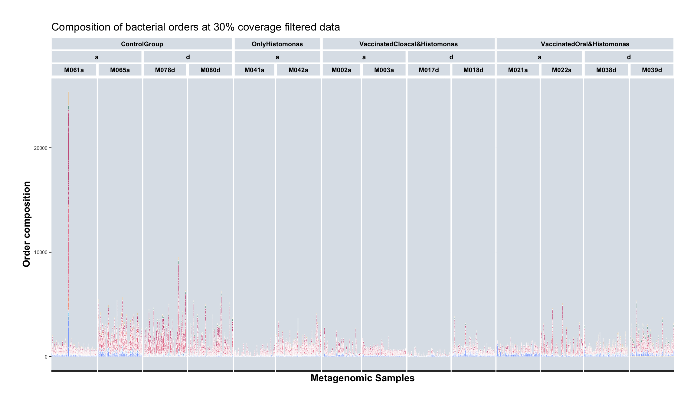
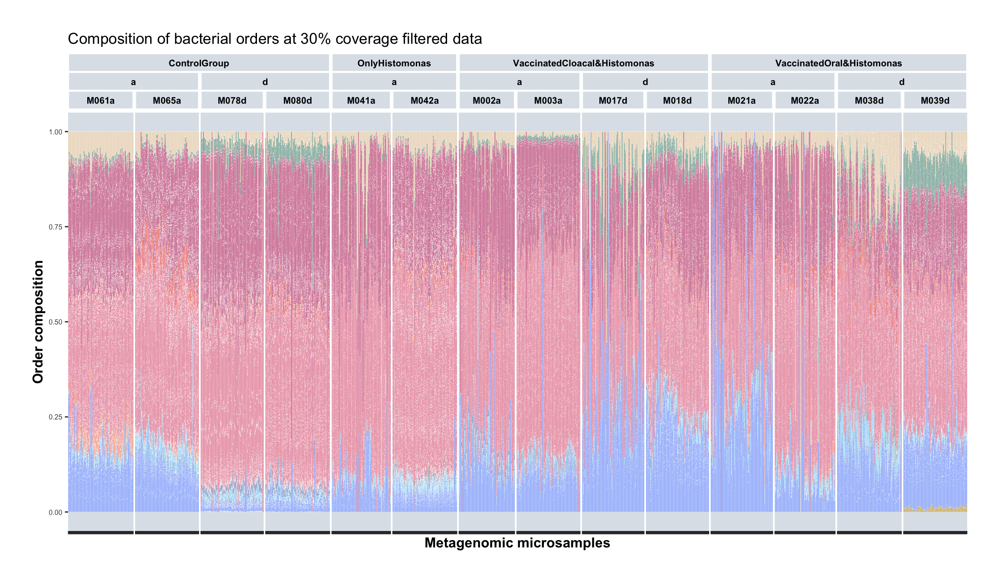
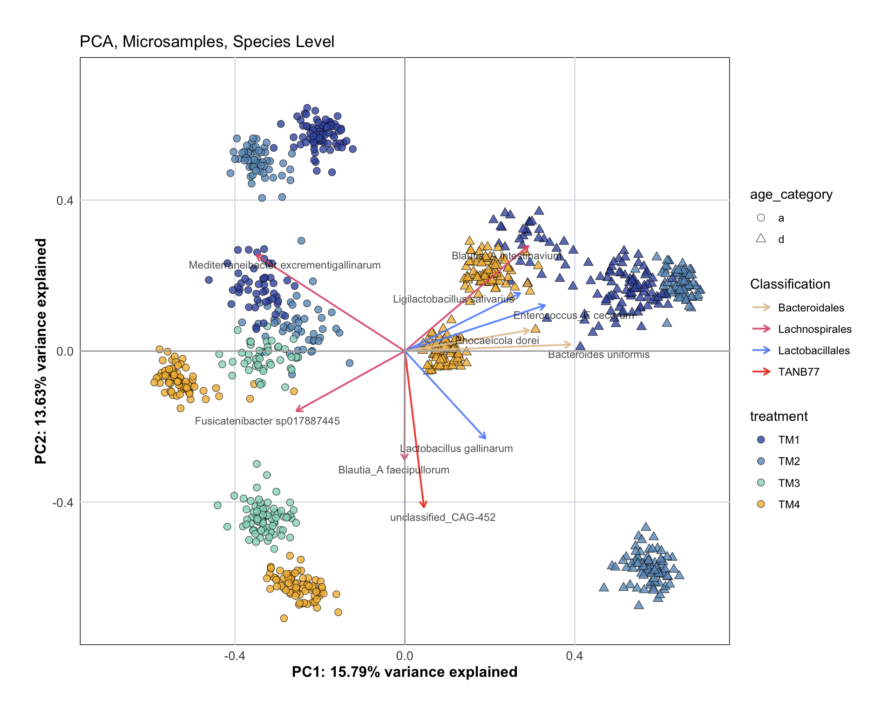

16 Beta Diversity - Micro Samples
load("data/macro/sample_metadata.Rdata")
load("data/micro/sample_metadata.Rdata")
load("data/micro/counts.Rdata")
load("data/micro/seq_stats.Rdata")
load("data/MAG_catalogue/data.Rdata")
load("data/data_colors.Rdata")16.1 Prepare tidy tables for plotting
Create tidy tables for filtered genome counts (micro)
tidy_plot_genome_counts_filt_30 <- genome_counts_filt_30 %>%
pivot_longer(-genome, names_to = "microsample", values_to = "count") %>%
left_join(genome_metadata, by = join_by(genome == genome)) %>%
left_join(sample_metadata, by = join_by(microsample == microsample)) %>%
left_join(final_combined_stats, by = join_by(microsample == microsample)) %>%
mutate(section = unlist(section)) %>%
filter(count > 0) %>%
mutate(phylum = factor(phylum, levels = phylum_level_vector),
order = factor(order, levels = order_level_vector))
tidy_plot_genome_counts_filt_30_closed <- genome_counts_filt_30 %>%
mutate_at(vars(-genome), ~ . / sum(.)) %>%
pivot_longer(-genome, names_to = "microsample", values_to = "count") %>%
left_join(genome_metadata, by = join_by(genome == genome)) %>%
left_join(sample_metadata, by = join_by(microsample == microsample)) %>%
left_join(final_combined_stats, by = join_by(microsample == microsample)) %>%
mutate(section = unlist(section)) %>%
filter(count > 0) %>%
mutate(phylum = factor(phylum, levels = phylum_level_vector),
order = factor(order, levels = order_level_vector))tidy_plot_genome_counts_filt_30 %>%
filter(treatment != "TM0") %>%
filter(type_simple == "P") %>%
ggplot(aes(x = microsample , y = count, fill = order)) +
geom_bar(stat="identity", colour="white", linewidth=0.1) + #plot stacked bars with white borders
scale_fill_manual(values = order_colors[-4], drop = FALSE) +
labs(x = "Metagenomic Samples", y = "Order composition",fill = "Read type") +
facet_nested(. ~ treatment_expl + age_category + animal, scales = "free", space = "free") +
custom_ggplot_theme +
theme(axis.text.x = element_blank(),
axis.text.y = element_text(angle = 0, hjust = 1, size = 6),
legend.position = "none") +
ggtitle("Composition of bacterial orders at 30% coverage filtered data")
tidy_plot_genome_counts_filt_30_closed %>%
filter(treatment != "TM0") %>%
filter(type_simple == "P") %>%
ggplot(aes(x = microsample , y = count, fill = order)) +
geom_bar(stat="identity", colour="white", linewidth=0.1) + #plot stacked bars with white borders
scale_fill_manual(values = order_colors[-4], drop = FALSE) +
labs(x = "Metagenomic microsamples", y = "Order composition",fill = "Read type") +
facet_nested(. ~ treatment_expl + age_category + animal, scales = "free", space = "free") +
custom_ggplot_theme +
theme(axis.text.x = element_blank(),
axis.text.y = element_text(angle = 0, hjust = 1, size = 6),
legend.position = "none") +
ggtitle("Composition of bacterial orders at 30% coverage filtered data")
16.2 Species level
df_wide <- tidy_plot_genome_counts_filt_30_closed %>%
# Remove metadata
select(genome, microsample, count) %>%
# Make tidy df into wide df
pivot_wider(
names_from = genome,
values_from = count,
# Fill missing values with 0
values_fill = 0) %>%
# Remove taxa (columns) that are zero for all leftover samples (rows)
select(where(~ any(. != 0))) %>%
# scale each sample to 100 (= closure to 100, not required, but common)
mutate(across(-microsample, ~ . / rowSums(across(where(is.numeric))) * 100 )) %>%
# turn the column 'microsample'into the name of the rows of the df
column_to_rownames(var = "microsample")
# Remove taxa in few samples, and samples with few taxa
df_wide <- remove_samples_or_taxa(df = df_wide,
min_samples_per_taxon = 15,
min_taxa_per_sample = 20)Initial df: Rows (samples): 1142 , Columns (taxa): 456
Removed: Rows (samples): 140 , Columns (taxa): 77
Resulting df: Rows (samples): 1002 , Columns (taxa): 379 # MICRO_sample_metadata <- sample_metadata %>%
# mutate(microsample = sample) %>%
# select(microsample, animal, age_category, treatment, treatment_expl) %>%
# mutate(sample_type = "MACRO")
pca_result <- perform_pca(df_wide, z_delete = TRUE)[1] "Zeros found"No. adjusted imputations: 68532
Rows (samples) removed after zero replacement: 84
Columns (taxa) removed after zero replacement: 197 p <- plot_pca(pca_result$pca_result,
samples_color_metadata = "treatment" ,
samples_shape_metadata = "age_category",
samples_color_value = treatment_colours_bright,
loadings_color_metadata = "order",
loadings_color_value = order_colors,
loadings_taxon_level = "species",
sample_metadata = sample_metadata,
genome_metadata = genome_metadata,
order_colors = order_colors,
custom_ggplot_theme)
p2 = p + ggtitle("PCA, Microsamples, Species Level")
p2
16.2.1 PERMANOVA
# Calculate Euclidean distance on CLR data
pca_animals_dist_matrix <- vegdist(pca_result$df_clr_dist, method = "euclidean")
# Make sure that filtered df and metadata have the same number & order of rows
pca_animals_metadata_adonis <- plot_data_stats %>%
filter(microsample %in% rownames(pca_result$df_clr_dist)) %>%
arrange(match(microsample, rownames(pca_result$df_clr_dist))) %>%
select(microsample, animal, treatment, age_category)
all(pca_animals_metadata_adonis$microsample == rownames(pca_result$df_clr_dist))[1] TRUE# Run PERMANOVA
adonis2_result <- adonis2(
pca_animals_dist_matrix ~ treatment + age_category + animal,
data = pca_animals_metadata_adonis,
permutations = 999,
by = "terms"
)
knitr::kable(adonis2_result)| Df | SumOfSqs | R2 | F | Pr(>F) | |
|---|---|---|---|---|---|
| treatment | 3 | 48035.79 | 0.2112380 | 245.4447 | 0.001 |
| age_category | 1 | 29749.58 | 0.1308242 | 456.0273 | 0.001 |
| animal | 9 | 90642.17 | 0.3986001 | 154.3824 | 0.001 |
| Residual | 904 | 58973.71 | 0.2593377 | NA | NA |
| Total | 917 | 227401.25 | 1.0000000 | NA | NA |